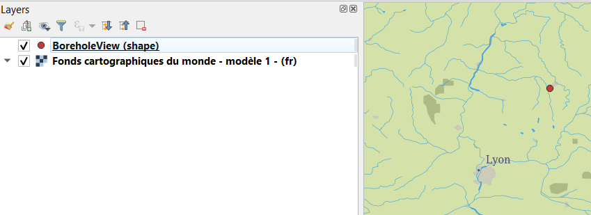
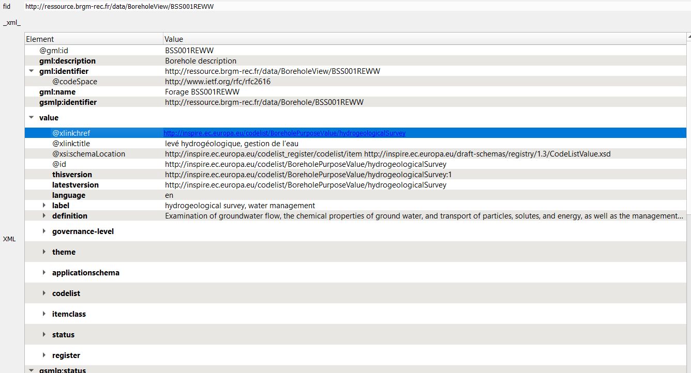
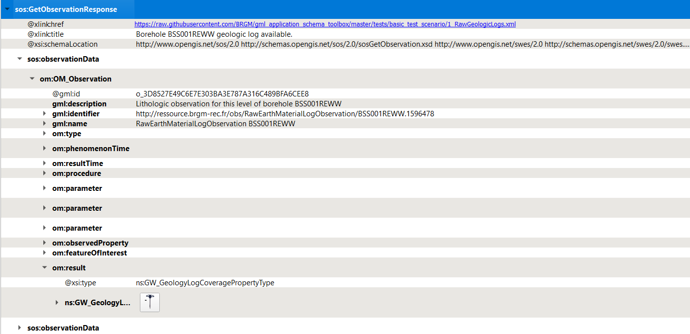
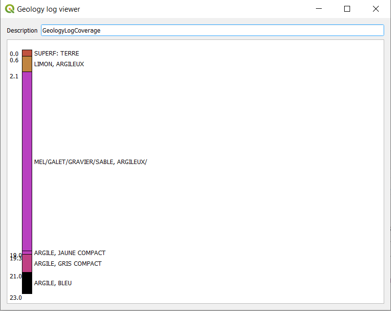
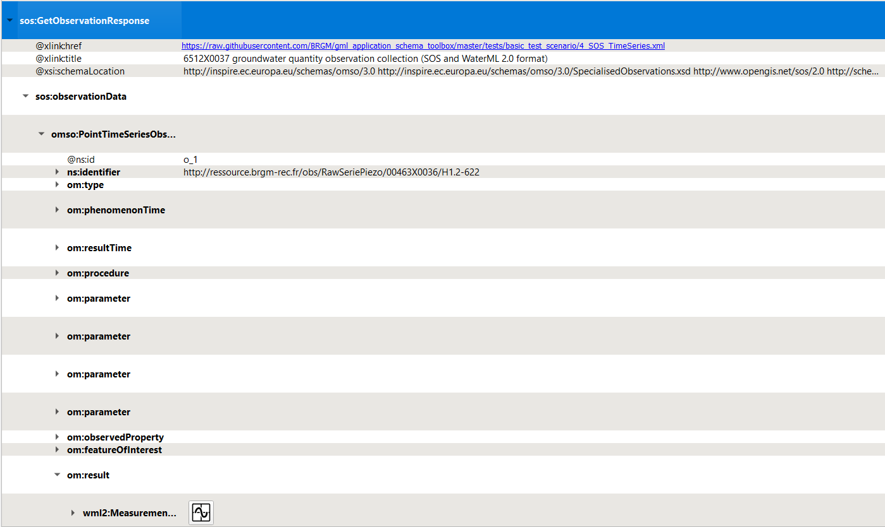
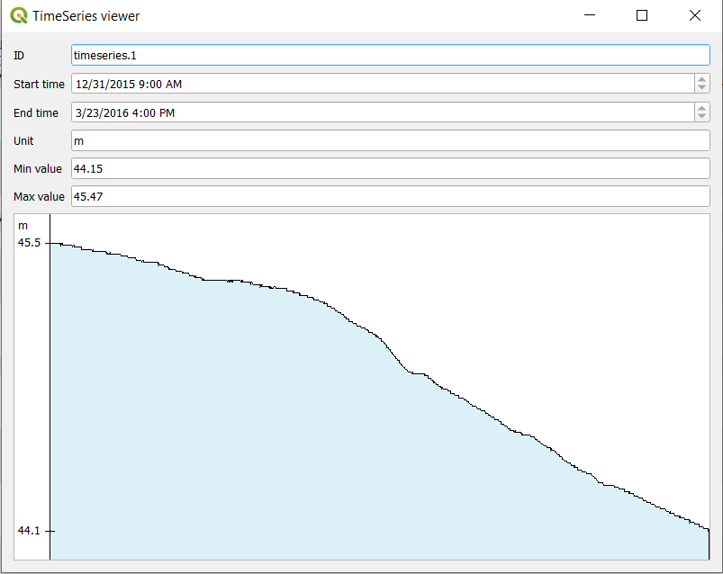
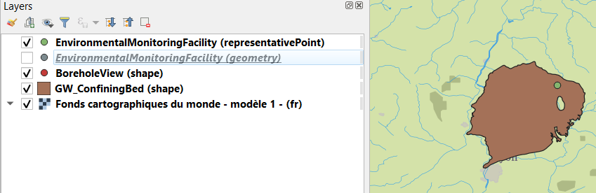

XML Mode - local test scenario¶
This scenario uses files stored on GitHub to avoid potential content negociation issues (network issues) with data servers
add a WMS background image
Whatever suits you, provided the entire world is visible (will help detect X/Y Axis being flipped :) )
initial information seed https://raw.githubusercontent.com/BRGM/gml_application_schema_toolbox/master/tests/basic_test_scenario/0_BoreholeView.xml
Load wizard > ‘File/Url’ > Load in XML Mode > XML Options : None > expected result : 1 new QGIS layer (BoreholeView (shape))

Then QGIS ‘Identify Features’ on the point added -> expected result : features attributes from the GML SHALL be displayed
dereferencing vocabulary
on INSPIRE registry
gsmlp:purpose/@xlink:href > (right click) ‘Resolve external’ > ‘Embedded’ -> expected result : the content of the attribute SHALL be enriched with content coming from the INSPIRE registry

on OGC definition server proceed as above on attributes having xlink:href starting with http://www.opengis.net/def/…
on EU geological surveys linked data registry proceed as above on attributes having @xlink:href starting with http://data.geoscience.earth/ncl/…
dereferencing a 1st feature (a geological log ) gsmlp:geologicalDescription/@xlink:href > (right click) ‘Resolve external’ > ‘Embedded’ -> expected result : the content of the attribute SHALL be enriched with sos:observationData. Open one of them and expand the om:OM_Observation then the om:result -> the Geology log viewer icon SHALL be proposed

Clicking on the icon next to GW_GeologyLog SHALL launch the Geology log viewer (preconfigured to render OGC:GroundWaterML2.0 GeologyLogCoverage compliant content)

dereferencing another Feature (a GroundWater Quantity Monitoring Facility) gsmlp:groundWaterLevel/@xlink:href > (right click) ‘Resolve external’ > ‘As a new Layer’ (ticking ‘Swap X/Y) -> expected result : two new QGIS layers (EnvironmentalMonitoringFacility (geometry) and EnvironmentalMonitoringFacility (representativePoint))
QGIS ‘Identify Features’ on one of them -> expected result : features attributes from the GML SHALL be displayed
from the Monitoring facility access groundwater observation dereferencing hasObservation (the one which title is “6512X0037 groundwater quantity observation collection (SOS and WaterML 2.0 format)”) ef:hasObservation/@xlink:href > (right click ) ‘Resolve external’ > ‘Embedded’ -> expected result : the content of the attribute SHALL be enriched with sos:GetObservationResponse
Expending the om:OM_Observation then the om:result -> the Timeseries viewer icon SHALL be proposed

Clicking on the icon next to wml2:MeasurementTimeseries SHALL launch the TimeSeries viewer (preconfigured to render OGC:WaterML2.0 Part 1 Timeseries compliant content)

from the Monitoring Facility add the GroundWater ressource monitored ef:observingCapability/ef:ObservingCapability/ef:ultimateFeatureOfInterest/xlink@href > (right click) ‘Resolve external’ > ‘As a new Layer’ -> expected result : 1 new QGIS layer GW_ConfiningBed (shape).
Position it under the other features using the ‘Layers Panel’ for better visibility

interrogate the GroundWater ressource monitored Then QGIS ‘Identify Features’ on the point added -> expected result : features attributes from the GML SHALL be displayed according to OGC GWML2 Model
Relational mode (GMLAS) scenario - Local test scenario¶
This scenario uses files stored on GitHub to avoid potential content negociation issues (network issues) with data servers
XML Mode - Content negociation test scenario¶
This scenario uses URI as opposed to files stored on GitHub thus involves content negociation with data servers
add a WMS background image
Same as for the “XML Mode - Local test scenario”
initial information seed https://forge.brgm.fr/svnrepository/epos/trunk/instances/BoreholeView.xml
Same steps as for the “XML Mode - Local test scenario”
dereferencing vocabulary
Same steps as for the “XML Mode - Local test scenario”
dereferencing a 1st feature (a geological log )
Same steps as for the “XML Mode - Local test scenario”
dereferencing another Feature (a GroundWater Quantity Monitoring Facility)
Same steps as for the “XML Mode - Local test scenario” TODO SG : tweak the resolver conf to make this work
from the Monitoring facility access groundwater observation
Step skipped for now as contrary to the “XML Mode - Local test scenario”, the payload describing the GroundWater Quantity Monitoring Facility served via the URI does not provide a reference to a SOS XML endpoint anymore (SensorThings API instead)
from the Monitoring Facility add the GroundWater ressource monitored
Same steps as for the “XML Mode - Local test scenario”
interrogate the GroundWater ressource monitored
Same steps as for the “XML Mode - Local test scenario”